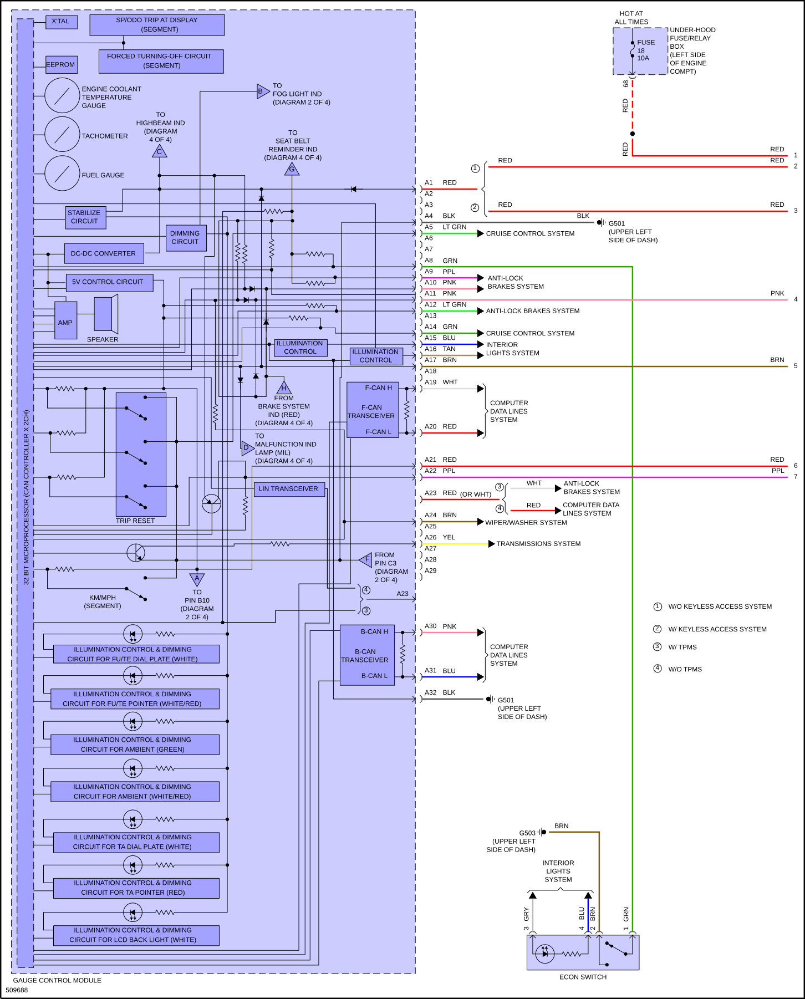
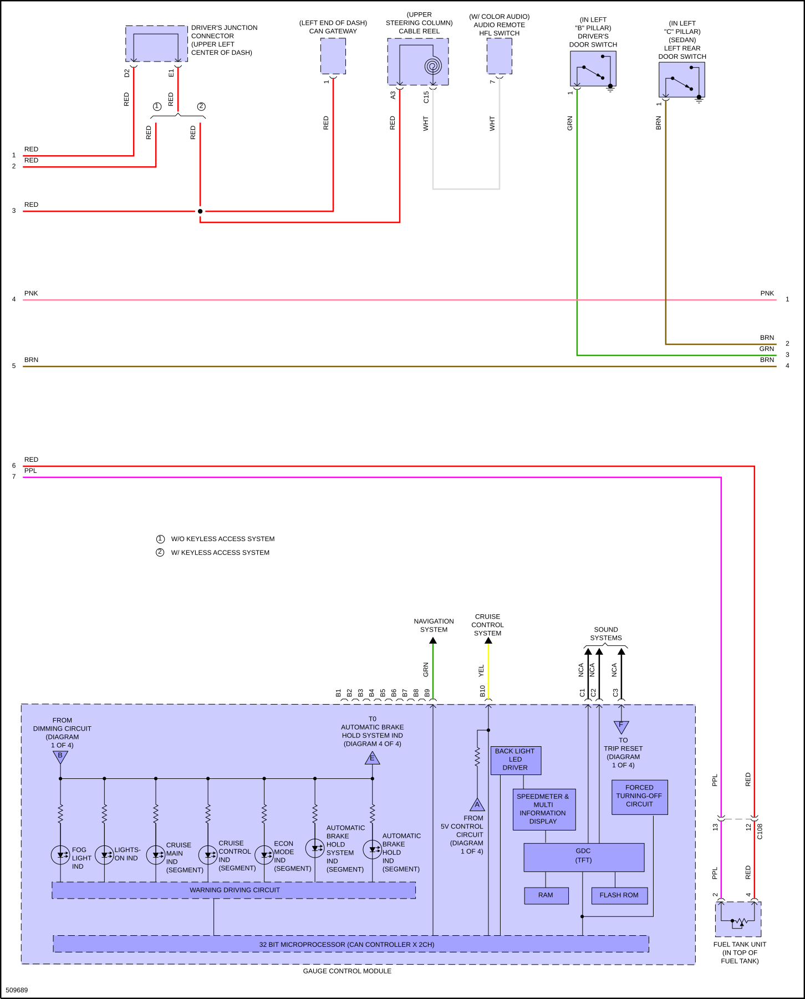
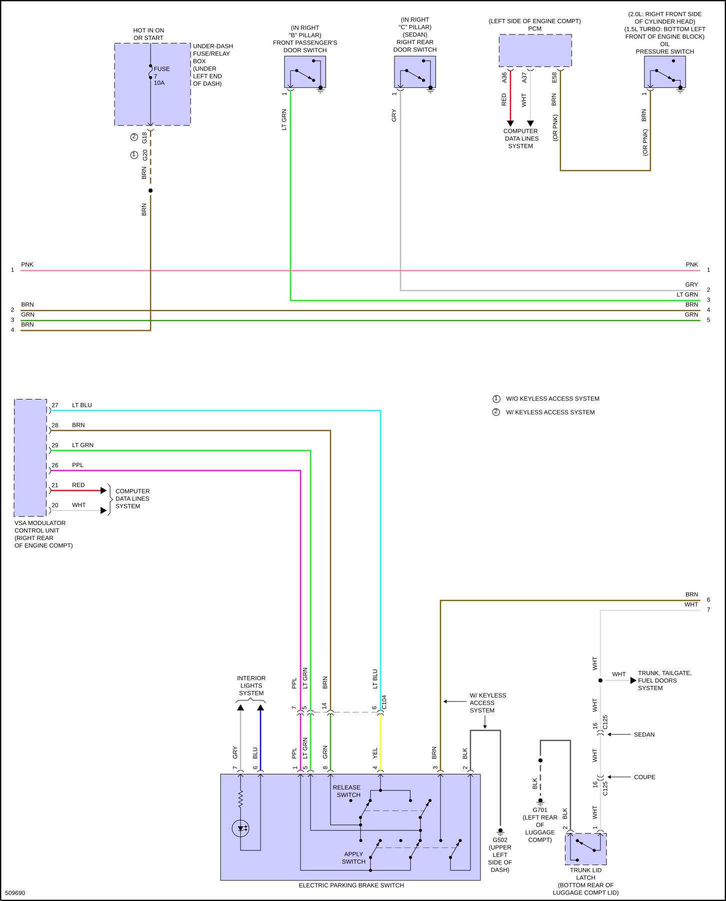
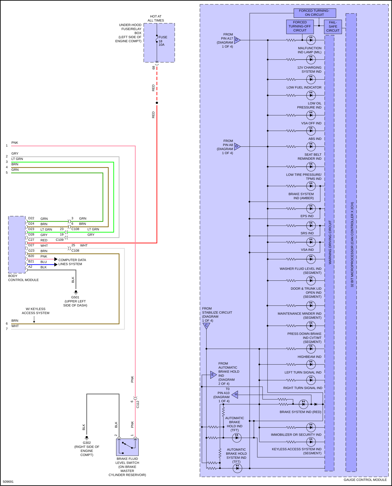

LEMON Manuals
: Even more car manuals for everyone: 1960-2025
Home
>>
Honda
>>
2016
>>
Civic LX, 4D Sedan, Automatic CVT Trans
>>
Repair and Diagnosis
>>
Quick Lookups
>>
Wiring Diagrams
>>
System Wiring Diagrams
>>
Instrument Cluster
Instrument Cluster
Fig 1: Instrument Cluster Circuit (1 of 4)

Fig 2: Instrument Cluster Circuit (2 of 4)

Fig 3: Instrument Cluster Circuit (3 of 4)

Fig 4: Instrument Cluster Circuit (4 of 4)
